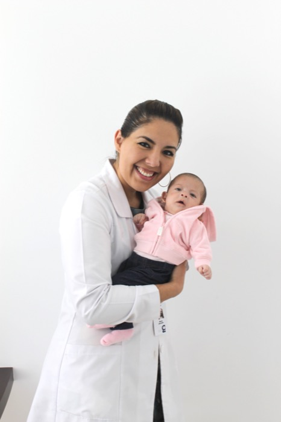

Responde 4 preguntas y obtén un análisis personalizado basado en tu perfil.
Esta herramienta ofrece orientación general. No constituye diagnóstico médico ni promesa de resultado.

Orientación general basada en criterios clínicos. Cada caso es único; un especialista evaluará tu situación concreta.
Ingresa tus datos para desbloquear tu análisis completo.
Tus datos son confidenciales. No compartimos tu información con terceros.